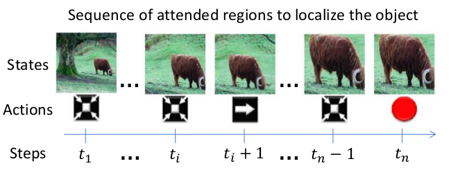
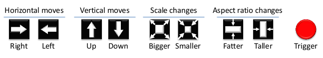
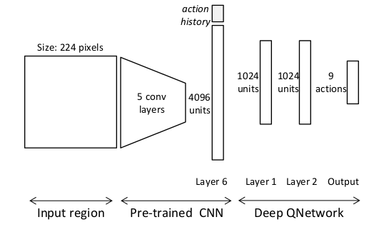
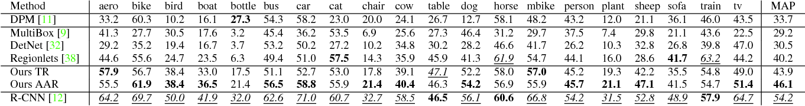
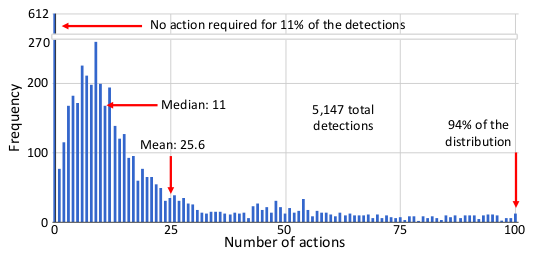
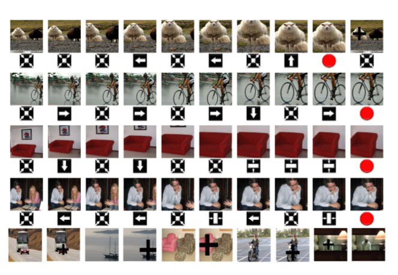

Core Thesis
Localization is not only scoring boxes.
It can be a sequence of actions.
Before
Evaluate many candidate regions
This paper
Move one box through a learned policy
2026.06.01
chunwoong park
202545335
Can an object detector act instead of evaluating many boxes?
many candidate regions
inefficient passive search
box movement as actions
fewer regions, directed search
efficient, but limited
scan many positions
generate candidate boxes
predict/refine box directly
Which candidate box
is correct?
What action should
the agent take next?
Region Evaluation Sequential Decision-Making
The task shifts from choosing a candidate box to choosing how the current box should move.

Start
whole scene / broad region
Loop
observe -> action -> transformed box
End
trigger when the box is tight enough
State
Value Estimator
Box Transformation
Reward (IoU change)
Stop search

horizontal / vertical moves
scale bigger or smaller
aspect-ratio adjustment
trigger detection
The action set is intentionally discrete, so the policy learns a search strategy rather than continuous box regression.

Visual state
CNN fc6 features
4096-dimensional observation vector
Memory
action history appended to the state
Output
Q-values for 9 possible actions
Can it localize with fewer evaluated regions?
Does it still reach good boxes?
Is learned search better than naive search?
The experiments ask whether the agent can still localize well while evaluating far fewer regions.
| Baseline | What it tests |
|---|---|
| Sliding window | Can active search avoid exhaustive scanning? |
| Region proposal | Can policy replace external candidate generation? |
| Random / heuristic search | Is learned policy meaningful? |
| Detection baselines | Does efficiency destroy accuracy? |

46.1
Ours AAR MAP
40.2
Regionlets MAP
30.5
DetNet MAP
54.2
R-CNN MAP

Median
11
actions, so roughly 11 processed regions
Mean
25.6
actions across 5,147 detections
This is the real contribution signal: not best absolute AP, but active localization with very few evaluated regions.

Strength
The search path is image-dependent, not a fixed sliding-window sweep.
Limitation
Discrete moves can still miss small or cluttered objects.
Best reading
A 2015 efficiency argument for learned active search, not a modern detector replacement.
Previous localization methods evaluated many candidate regions.
This paper reformulates localization as policy-guided box transformation.
The result is efficient active search, but limited by class-specific policy, discrete actions, and simplified reward.